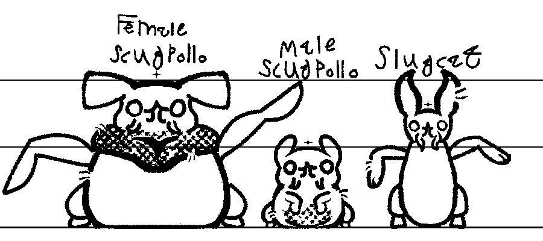

Slugcats
Socially complex slimy critters of medium size originating from myxiniformes.
Garbage worms

Mostly dwelling in their ruined habitats, these critters are bound to their subterrainian dens and eat other creatures, big and small.
Socially complex slimy critters of medium size originating from myxiniformes.
Mostly dwelling in their ruined habitats, these critters are bound to their subterrainian dens and eat other creatures, big and small.